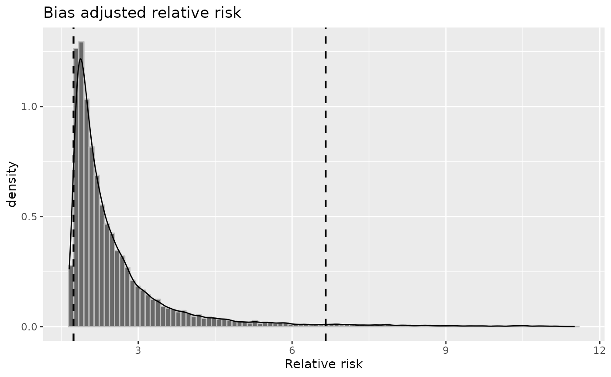
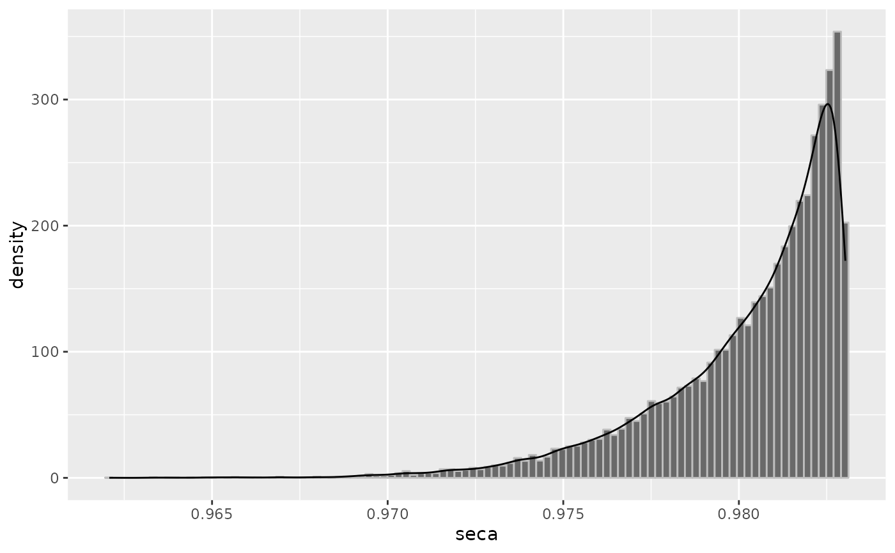
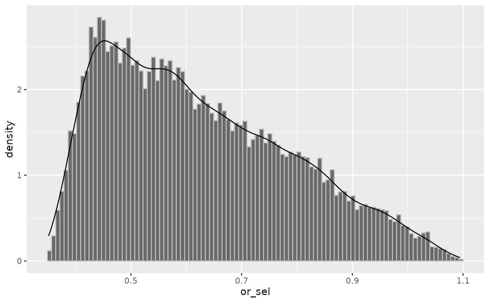
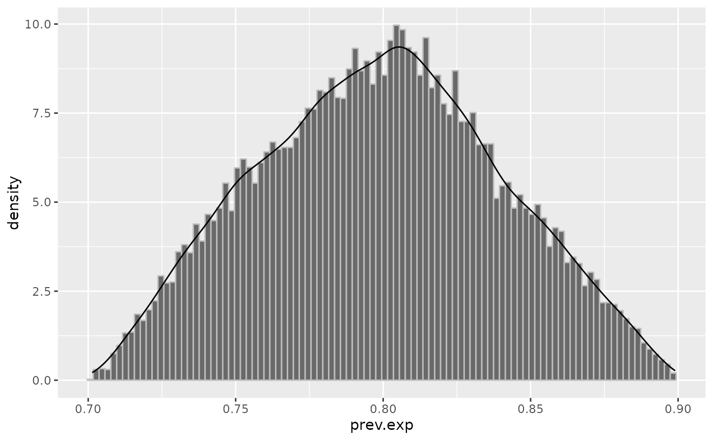
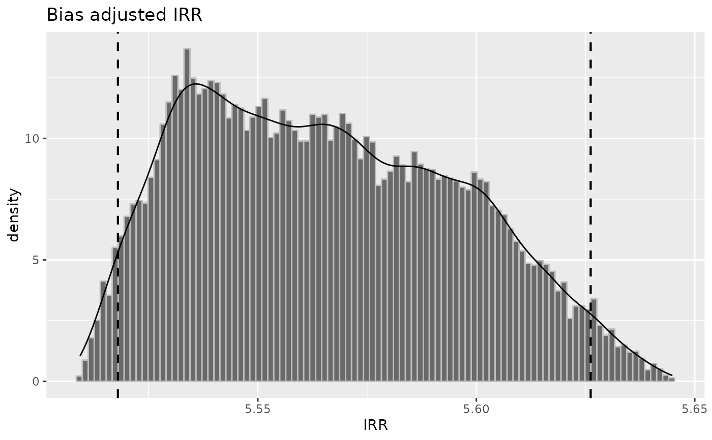
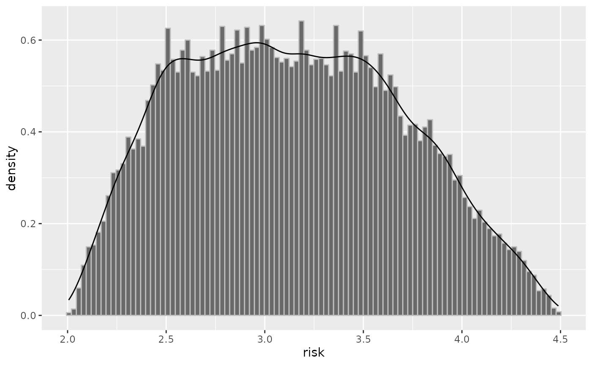

This takes a probsens-family object and produces the distribution plot of
chosen bias parameters, as well as distribution of adjusted measures (with confidence
interval).
Arguments
- x
An object of class "episensr.probsens" returned from the
episensr probsens,probsens.sel,probsens.conf,probsens.irr,probsens.irr.conffunctions.- parms
Choice between adjusted relative risk (
rr) and odds ratio (or), total error relative risk and odds ratio (rr_totandor_tot),seca,seexp,spca,or_sel, andspexp,prev.exp,prev.nexpandrisk,irrandirr_tot.- ...
Other unused arguments.
Examples
set.seed(123)
risk <- probsens(matrix(c(45, 94, 257, 945),
dimnames = list(c("BC+", "BC-"), c("Smoke+", "Smoke-")), nrow = 2, byrow = TRUE),
type = "exposure", reps = 20000,
seca.parms = list("trapezoidal", c(.75, .85, .95, 1)),
spca.parms = list("trapezoidal", c(.75, .85, .95, 1)))
#> Chosen prior Se/Sp distributions lead to 784 negative adjusted counts which were discarded.
plot(risk, "rr")
#> Warning: Removed 784 rows containing non-finite values (`stat_bin()`).
#> Warning: Removed 784 rows containing non-finite values (`stat_density()`).

set.seed(123)
odds <- probsens(matrix(c(45, 94, 257, 945),
dimnames = list(c("BC+", "BC-"), c("Smoke+", "Smoke-")), nrow = 2, byrow = TRUE),
type = "exposure", reps = 20000,
seca.parms = list("beta", c(908, 16)),
seexp.parms = list("beta", c(156, 56)),
spca.parms = list("beta", c(153, 6)),
spexp.parms = list("beta", c(205, 18)),
corr.se = .8,
corr.sp = .8)
plot(odds, "seca")

set.seed(123)
select <- probsens.sel(matrix(c(136, 107, 297, 165),
dimnames = list(c("Melanoma+", "Melanoma-"), c("Mobile+", "Mobile-")),
nrow = 2, byrow = TRUE), reps = 20000,
or.parms = list("triangular", c(.35, 1.1, .43)))
plot(select, "or_sel")

set.seed(123)
conf <- probsens.conf(matrix(c(105, 85, 527, 93),
dimnames = list(c("HIV+", "HIV-"), c("Circ+", "Circ-")), nrow = 2, byrow = TRUE),
reps = 20000,
prev.exp = list("triangular", c(.7, .9, .8)),
prev.nexp = list("trapezoidal", c(.03, .04, .05, .06)),
risk = list("triangular", c(.6, .7, .63)),
corr.p = .8)
plot(conf, "prev.exp")

set.seed(123)
inc1 <- probsens.irr(matrix(c(2, 67232, 58, 10539000),
dimnames = list(c("GBS+", "Person-time"), c("HPV+", "HPV-")), ncol = 2),
reps = 20000,
seca.parms = list("trapezoidal", c(.4, .45, .55, .6)),
spca.parms = list("constant", 1))
plot(inc1, "irr")

set.seed(123)
inc2 <- probsens.irr.conf(matrix(c(77, 10000, 87, 10000),
dimnames = list(c("D+", "Person-time"), c("E+", "E-")), ncol = 2),
reps = 20000,
prev.exp = list("trapezoidal", c(.01, .2, .3, .51)),
prev.nexp = list("trapezoidal", c(.09, .27, .35, .59)),
risk = list("trapezoidal", c(2, 2.5, 3.5, 4.5)),
corr.p = .8)
plot(inc2, "risk")
